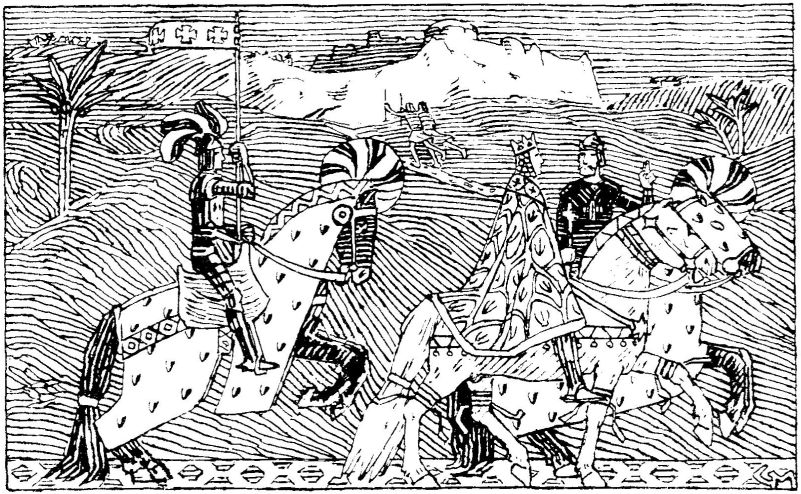

Sigurd the Crusader
King Sigurd the Crusader (Sigurd I Magnusson, reigned 1103–1130) was one of Norway's most notable medieval kings, best known for being the first European monarch to embark on a crusade to the Holy Land. Born around 1090, he was the son of King Magnus Barefoot. Sigurd ruled jointly with his brothers before becoming the sole king of Norway in 1115. Between 1107 and 1111, he led the Norwegian Crusade, traveling through Europe and the Mediterranean with a fleet, aiding Christian forces in battles against Muslim territories in Iberia and the Levant. His efforts culminated in a pilgrimage to Jerusalem, where he met King Baldwin I and contributed to strengthening the Crusader states. Upon his return, Sigurd brought relics and prestige to Norway, earning admiration across Christendom. His reign is remembered for its relative stability, cultural connections to Europe, and the expansion of royal authority. Sigurd died in 1130, and his passing marked the end of a period of unity before civil wars erupted in Norway.
